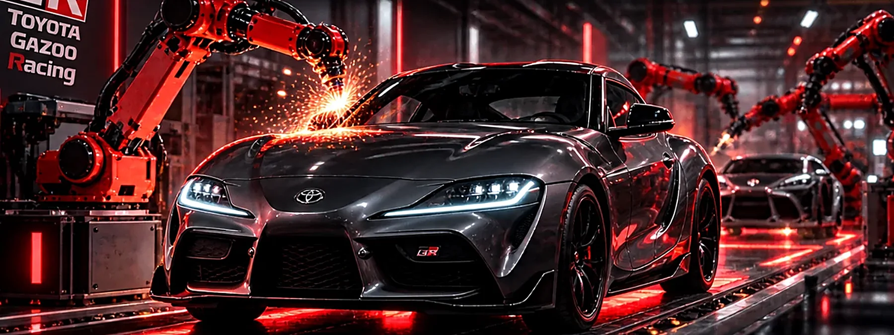

MISIÓN
El motivo
para avanzar.
“Producing Happiness for All”Producir felicidad para todos.
EL PROPÓSITO
Personas, procesos y tecnología trabajando hacia un mismo objetivo. Una experiencia interactiva de administración empresarial.
Proyecto académico independiente. No afiliado a Toyota Motor Corporation.
Un sistema administrativo reúne personas, procesos, recursos e información para organizar y coordinar las actividades de una empresa.
En Toyota conecta producción, compras, logística, finanzas, ventas y recursos humanos para alcanzar objetivos comunes.
Selecciona un departamento para conocer su función.
Selecciona cada componente para explorar cómo funciona dentro de Toyota.
Cuando las áreas trabajan aisladas, aparecen retrasos, desperdicios, costos innecesarios y problemas de calidad.
Elige un escenario para observar el impacto de la coordinación.
Cada etapa
construye la calidad.
La eficiencia no se improvisa: se construye con planeación y mejora continua.
Just in Time: disponer de los materiales necesarios en el momento adecuado, evitando inventarios excesivos y desperdicios.
Kaizen: mejorar continuamente mediante cambios constantes en los procesos y la participación de las personas.
Planear → Ejecutar → Evaluar → Mejorar
La tecnología permite supervisar operaciones, detectar problemas y respaldar decisiones de manufactura, logística, ventas y calidad.
Panel demostrativo · Datos ficticios, no corresponden a Toyota
Selecciona un indicador para ver cómo contribuye a la administración.
Si un proveedor se retrasa, pueden faltar materiales, detenerse la producción y afectarse las entregas al cliente.
Presiona «Simular falla» para observar las consecuencias.
Simulación conceptual con fines académicos.
El sistema administrativo de Toyota integra objetivos, personas, estructura, procesos, recursos, información, tecnología y control. Su coordinación favorece la calidad, la reducción de desperdicios y la mejora continua.

TOYOTA
Un propósito que guía el presente.
Una visión que pone el futuro en movimiento.
01 / LA EMPRESA
Toyota Motor Corporation es una empresa japonesa dedicada al diseño, fabricación y comercialización de vehículos y al desarrollo de soluciones de movilidad.
DISEÑO / INGENIERÍA / MOVILIDAD
Distintas formas de moverse.
Una identidad que las conecta.
02 / FILOSOFÍA GLOBAL DE TOYOTA
Declaraciones de la Toyota Philosophy ↗. El texto original se presenta en inglés, acompañado de una traducción al español.
“Producing Happiness for All”Producir felicidad para todos.
“Creating Mobility for All”Crear movilidad para todos.
03 / JUSTIFICACIÓN
Análisis de cómo el propósito y la aspiración orientan las decisiones de la empresa.
“Producir felicidad para todos” expresa un propósito que va más allá de vender automóviles. La calidad, la seguridad y la confiabilidad pueden contribuir al bienestar de clientes, colaboradores y comunidades. Por eso, la misión da un sentido humano a sus productos y a la mejora continua de sus procesos.
“Crear movilidad para todos” define una dirección: facilitar que más personas puedan desplazarse y participar en la sociedad. Orienta la innovación hacia soluciones accesibles, seguras y adaptadas a distintas necesidades; amplía la mirada de Toyota desde el automóvil hacia la movilidad.
La misión explica para qué existe Toyota; la visión expresa qué futuro busca construir. Se conectan porque una movilidad más accesible puede mejorar la autonomía, el acceso al trabajo y la calidad de vida de las personas.
04 / DEL PROPÓSITO A LA ACCIÓN
Reconocer distintas necesidades de movilidad y barreras de acceso.
Desarrollar soluciones seguras, accesibles y de menor impacto ambiental.
Evaluar calidad, seguridad, satisfacción y accesibilidad para ajustar las soluciones.
Propuesta de análisis: ampliar el acceso a soluciones de movilidad y evaluar su impacto con indicadores de seguridad, accesibilidad y satisfacción. Este objetivo es una interpretación académica, no una meta oficial anunciada por Toyota.
Las justificaciones y el análisis estratégico son explicaciones propias. Las traducciones al español acompañan las declaraciones originales en inglés.
Buscar la excelencia mediante la mejora continua, el respeto por las personas, la eliminación de desperdicios, la innovación responsable y el trabajo colaborativo, tomando decisiones basadas en hechos y priorizando la calidad, la seguridad y el valor para el cliente.
Síntesis académica de principios de gestión asociados con Toyota.
El Toyota Way 2001 agrupa cinco valores en torno a la mejora continua y el respeto por las personas.
Afrontar retos con una visión de largo plazo y buscar nuevas oportunidades.
Mejorar continuamente los procesos y aprender de cada experiencia.
Ir al lugar de los hechos para comprender los problemas y tomar decisiones fundamentadas.
Valorar a las personas, escuchar sus ideas y actuar con consideración.
Colaborar, compartir conocimientos y desarrollar el talento de las personas.
Referencia: Toyota Way 2001. Descripciones resumidas para fines académicos.
Seis principios para orientar nuestras decisiones, las operaciones y la relación con las personas.
Garantizar vehículos y servicios que cumplan estándares rigurosos, protegiendo a clientes, trabajadores y comunidades.
Evaluar permanentemente los procesos, resolver problemas e innovar para elevar la productividad.
Impulsar la capacitación, la igualdad de oportunidades, la seguridad laboral y la participación de los colaboradores.
Actuar con transparencia, cumplir las obligaciones y mantener relaciones responsables con clientes, proveedores y comunidades.
Reducir el impacto ambiental de las operaciones, utilizar eficientemente los recursos y desarrollar movilidad de menor impacto.
Responder a los cambios tecnológicos, económicos y del mercado sin descuidar la calidad.
Valores presentados como síntesis académica, no como listado oficial literal de Toyota.
Toyota demuestra que el éxito de una empresa no depende únicamente de fabricar buenos automóviles, sino también de contar con una misión, visión, filosofía y valores que orienten sus decisiones. La mejora continua, el respeto por las personas, la innovación y el trabajo en equipo fortalecen su competitividad y su capacidad para adaptarse. Por ello, la planeación estratégica es fundamental para alcanzar objetivos y construir un futuro más sostenible.